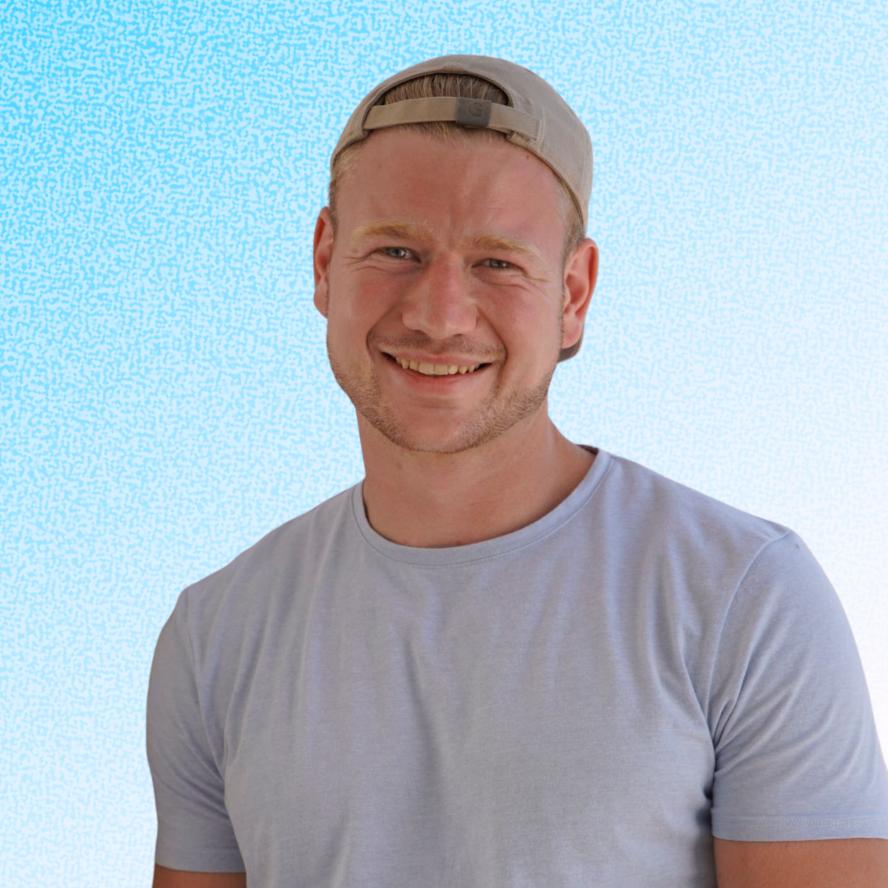

Henk Jekel

I am Henk Jekel, a Dutch software robotics engineer driven to make a difference in the field of of cognitive robotics. My life started out on a small farm in the Netherlands, where I could watch my dad solve all kinds of technical problems as if it was peanuts. I think this is where my desire for wanting to know how the world works was created. My academic journey started at the University of Twente in the Netherlands, at the campus in the middle of the woods. In my free time there I liked to do sports such as boxing and gymnastics, which I also helped teach to students. I also became a student assistant in the last year of my bachelor's. I have always liked to learn things and then to transfer that knowledge to others. I completed a bachelor's in Mechanical Engineering with a minor in Aircraft Engineering and a minor in bio-robotics. During this time I did numerous projects as you can see on my projects page. My thesis was related to computer vision, where I made a design for glasses for blind people. Having that knowledge of a bachelor's degree in Mechanical Engineering and of static and dynamic systems, I felt that mechanical systems integrated with artificial intelligence would be the future and that felt exciting. So I decided to do a master's degree in robotics at TU Delft (Netherlands), where I could learn about the software side of robotics. In my free time I picked up dancing and fitness and taught that to students. I also became a student assistant here and taught subjects such as robot dynamics & control and computer vision. You can find projects I did during this time at my projects page. To finish things off, during my master's thesis I worked on a tele-impedance project where a VLM would output the stiffness matrix for the endpoint of a robot arm for a certain task based on voice and eye tracking input. With this work I published my first Frontiers in Robotics and AI paper. After that, actually slightly before finishing my thesis, I started working at Demcon Unmanned Systems. It felt like the perfect fit, because I could apply much of what I had learned throughout my studies and close the knowledge gaps while working on a real embedded system in the form of USVs (Unmanned Surface Vessels). With knowledge gaps, I mean those things that you do not have to deal with in relatively smaller projects. The USV's include hardware integration, networking, CI/CD and much more that you normally do not have to deal with in smaller projects.